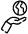
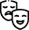

¿Quiénes somos?
Nuestros valores:
 SostenibilidadEmpoderamiento
Identidad Local
Flexibilidad y Adaptación
 Cultura y Conciencia
Estrategias:
Nuestras estrategias para fomentar la producción local en Medellín son:
Incubadoras de empresas: ayudan a nuevas empresas y emprendedores con asesoramiento, financiamiento y conexiones para crecer.Espacios de trabajo compartido: ofrecen alquiler de espacios de trabajo colaborativos con servicios de oficina para emprendedores y profesionales.
¿Qué hacemos?
Ofrecemos espacios de coworking para nuestra comunidad en Medellín y para nómadas digitales. Establecemos alianzas con emprendimientos locales y proporcionamos entornos enriquecedores para abordar diversos temas relacionados con la sostenibilidad y el cuidado del medio ambiente.
¿Quiénes son los/as nómadas digitales?
Los/as nómadas digitales son personas que tienen la capacidad de trabajar de forma remota utilizando tecnologías digitales, lo que les permite llevar a cabo su labor desde cualquier lugar del mundo con conexión a internet.
Dentro del contexto de Medellín, los/as nómadas digitales pueden desempeñar un papel significativo en la economía local de diversas formas y Colibrí ayudará para que este impacto sea más que positivo para toda nuestra comunidad:
 Espacios de coworking.
Espacios de coworking.
Consumo local.
Promoción de la cultura local.
 Formación de redes y colaboración.
Formación de redes y colaboración.

.png)
.png)
{kind=link}
{kind=link}
{kind=link}
{kind=link}